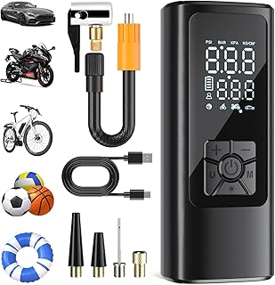
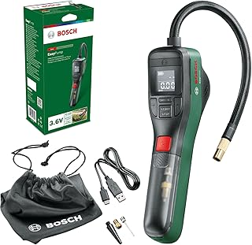
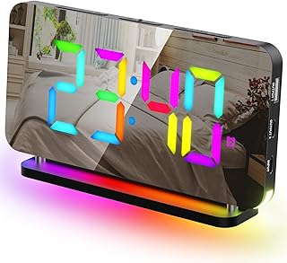
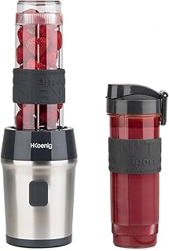

Compresseur à Air Portatif HOVVIDA – Gonflez Facilement, Où Que Vous Soyez
Gagnez en autonomie et en sécurité avec le compresseur à air portatif HOVVIDA 150 PSI, un outil indispensable pour la voiture, la moto, le vélo ou même les ballons. Compact, sans fil et puissant, il vous accompagne partout grâce à sa batterie longue durée et son écran LED intégré.
Un allié pratique pour les trajets quotidiens, les vacances, ou les urgences sur la route.
📦 Ce que ce compresseur vous offre :
🔋 Autonomie renforcée : Batterie de 5200 mAh rechargeable en USB 5V, idéale pour plusieurs gonflages sans recharge.
💨 Puissance de gonflage rapide : Jusqu’à 150 PSI (10,3 Bar) pour une inflation rapide et efficace.
🛑 Sécurité assurée : Fonction arrêt automatique dès que la pression souhaitée est atteinte.
💡 Éclairage intégré : Lampe LED pour une utilisation de nuit ou dans des zones peu éclairées.
🎯 Polyvalent : 4 embouts inclus pour pneus de voiture, moto, vélo, ballon et plus.
➡️ Le compagnon indispensable à garder dans votre voiture pour faire face à toutes les situations.
Voir l'offre

Compresseur d’Air Portable Amazon Basics – Gonflage Rapide et Fiable en Toute Simplicité
Ne tombez plus jamais en panne de pression grâce à ce compresseur d’air compact Amazon Basics, conçu pour offrir une solution rapide, sûre et efficace pour gonfler vos pneus et bien plus. Son format pratique, son arrêt automatique et sa lumière LED en font un outil de secours essentiel.
Idéal pour les trajets quotidiens, les longs voyages ou une utilisation à domicile.
📦 Ce que ce compresseur vous offre :
💨 Pression puissante : Jusqu’à 10,34 bars (150 PSI) pour un gonflage rapide des pneus de voiture, vélo, équipements sportifs, etc.
🛑 Fonction arrêt automatique : S’éteint automatiquement une fois la pression cible atteinte pour plus de sécurité.
🔦 Lampe LED intégrée : Pour une visibilité optimale, même dans l’obscurité ou en cas d’urgence.
⚙️ Connexion simple : Fonctionne sur prise allume-cigare DC 12V, compatible avec la plupart des véhicules.
🧳 Format compact : Facile à ranger dans le coffre ou la boîte à gants.
➡️ Une solution pratique, compacte et efficace pour maintenir vos pneus toujours à la bonne pression..
Voir l'offre

Compresseur Güde Airpower 180/08 – Puissant, Silencieux et Sans Huile pour Tous Vos Travaux
Le Güde Airpower 180/08 est un compresseur sans huile, performant et nécessitant peu d'entretien, parfait pour les bricoleurs exigeants. Grâce à son entraînement par courroie, il garantit un fonctionnement plus silencieux et plus durable. Idéal pour alimenter vos outils pneumatiques ou gonfler rapidement pneus, ballons, matelas et plus encore.
Robuste, compact et conçu pour une utilisation domestique ou semi-professionnelle.
📦 Ce que ce compresseur vous offre :
🔧 Sans huile & entretien réduit : Technologie propre, sans risque de fuite ou de salissure.
⚡ Puissance maîtrisée : Moteur de 1100 W pour une pression maximale de 8 bars.
💨 Débit d'air efficace : Débit effectif de 140 L/min pour une performance constante.
🔄 Entraînement par courroie : Plus silencieux et meilleure longévité du moteur.
🔌 Accessoires inclus : Tuyau d’air comprimé 2,5 m avec raccord rapide pour une mise en service immédiate.
➡️ Le compagnon idéal pour vos projets de bricolage, petits travaux de peinture, gonflage et soufflage.
Voir l'offre

Bosch EasyPump – Mini Compresseur Intelligent et Puissant pour Tous Vos Gonflages
La Bosch EasyPump est une pompe à air électrique compacte et performante, idéale pour gonfler pneus de vélo, pneus de voiture, ballons et autres objets du quotidien. Dotée d'une batterie rechargeable longue durée et d’une fonction Autostop, elle garantit une inflation précise et sans effort.
Conçue pour une utilisation rapide, pratique et nomade, elle est un indispensable à avoir chez soi ou en déplacement.
📦 Ce que cette pompe vous offre :
🚗 Pression optimale garantie : Jusqu’à 150 PSI / 10,3 bar, idéale pour tous types de pneus.
🔋 Batterie intégrée 3,0 Ah – 3,6V : Rechargeable via USB-C pour une autonomie maximale.
✋ Fonction Autostop intelligente : Arrêt automatique dès que la pression souhaitée est atteinte.
💡 Éclairage LED intégré : Utilisation facilitée même dans les zones peu éclairées.
👜 Format ultra compact : Facile à transporter, livrée dans une boîte en carton pratique.
➡️ Un outil Bosch fiable et innovant, parfait pour les cyclistes, les automobilistes et les familles actives.
Voir l'offre

Cadeau Original pour Homme – Gants LED Multifonctions pour Noël, Anniversaire ou Bricolage
Offrez un cadeau à la fois pratique et original avec ces gants LED lumineux, parfaits pour les papas, les bricoleurs, les amateurs de pêche ou de gadgets innovants. Ces gants de lampe de poche intégrée sont une idée cadeau idéale pour Noël, un anniversaire ou tout événement spécial.
Un accessoire ingénieux pour travailler dans l'obscurité, réparer, bricoler ou pêcher les mains libres !
📦 Ce que ce cadeau vous offre :
💡 Lumière intégrée aux doigts : 2 LED puissantes pour éclairer précisément là où vous en avez besoin.
🧤 Gants confortables et ajustables : Taille unique avec sangle velcro pour un maintien parfait.
🔋 Fonctionne avec piles incluses : Prêt à l'emploi dès l’ouverture du paquet.
🎣 Parfait pour la pêche, le bricolage, le camping ou les urgences nocturnes.
🎅 Idée cadeau unique pour les fêtes : Emballé pour être glissé dans une chaussette de Noël ou offert en main propre.
➡️ Une idée cadeau astucieuse qui allie utilité et originalité. Pour tous les hommes qui aiment les gadgets pratiques et les activités en extérieur !
Voir l'offre

Gant de Rééducation Robotique – EMFOCU pour AVC, Hémiplégie et Réhabilitation des Doigts
Le gant thérapeutique EMFOCU est un dispositif innovant conçu pour accompagner la rééducation fonctionnelle de la main après un AVC, une hémiplégie ou une paralysie des doigts. Grâce à sa technologie robotisée, ce gant facilite les exercices de motricité et stimule la récupération progressive de la mobilité.
Un outil essentiel pour les patients en phase de rééducation ou les professionnels de santé en neurothérapie.
📦 Ce que ce gant vous offre :
🖐️ Mobilisation active des doigts : Aide à effectuer les mouvements de flexion/extension même en cas de perte de motricité.
⚙️ Technologie robotique intelligente : Simulation des mouvements naturels pour accélérer la récupération.
👨‍⚕️ Idéal pour AVC, hémiplégie, paralysie : Soutient la réhabilitation neuromusculaire de la main.
🧘 Amélioration de la circulation et de la souplesse articulaire.
💼 Utilisation à domicile ou en centre de rééducation : Facile à enfiler, léger et ergonomique.
➡️ Un gant de rééducation de nouvelle génération, pensé pour redonner de l’autonomie aux personnes ayant subi un accident neurologique. Un allié précieux pour retrouver la mobilité, pas à pas.
Voir l'offre

Réveil Numérique LED 7" – Design Miroir, Multicolore & Fonction Snooze
Commencez chaque journée du bon pied avec le GlasFlength Réveil Numérique LED, une horloge moderne et multifonction conçue pour allier style, confort et praticité. Avec son affichage miroir 7 pouces, ses 11 couleurs de veilleuses RGB et ses réglages personnalisables, ce réveil s’adapte parfaitement à votre routine matinale.
Un accessoire incontournable pour les chambres modernes, les bureaux ou les espaces enfants.
📦 Ce que ce réveil vous offre :
🌈 11 veilleuses LED multicolores : Ambiance personnalisée selon vos envies, idéale pour le coucher ou la décoration.
🔊 5 niveaux de volume d’alarme : Pour un réveil en douceur ou plus énergique.
💡 5 niveaux de luminosité réglable : N’éblouit pas la nuit, visible même en plein jour.
🕘 Affichage 12/24H & fonction snooze : Lecture claire de l’heure et répétition de l’alarme facile.
🔌 Adaptateur secteur inclus : Pas besoin de piles, branchement direct.
➡️ Que ce soit pour les adultes, les ados ou les enfants, ce réveil digital moderne offre esthétique, fonctionnalité et confort pour bien commencer la journée.
Voir l'offre

Ruban LED Intelligente Philips Hue – Ambiance Multicolore Connectée (2 mètres)
Créez une ambiance lumineuse unique et immersive dans votre intérieur avec le ruban LED Philips Hue White and Color Gradient. Long de 2 mètres, il vous offre une lumière blanche chaude ou froide et jusqu’à 16 millions de couleurs, le tout pilotable via Bluetooth ou pont Hue.
Compatible avec Alexa, Google Assistant et Apple HomeKit, ce ruban transforme votre maison en espace intelligent, stylé et personnalisable.
📦 Ce que vous offre ce ruban LED connecté :
🎨 Lumière dynamique multicolore : Effets dégradés pour une ambiance immersive.
🔊 Contrôle vocal intelligent : Fonctionne avec Alexa, Google Assistant et Siri (via HomeKit).
📱 Contrôle sans fil : Grâce à l'application Philips Hue (Bluetooth ou pont Hue).
✂️ Flexible et ajustable : Peut être découpé pour s’adapter à vos meubles, étagères, TV, etc.
🔧 Installation facile : Adhésif intégré pour une pose rapide, sans outils.
➡️ Idéal pour le salon, chambre, gaming setup, bureau ou même une déco festive. Offrez à votre intérieur une touche de modernité et de couleur contrôlée au doigt et à la voix.
Voir l'offre

WEILY Ruban LED Connecté 15m – Éclairage Intelligente et Ambiance Personnalisée
Transformez votre intérieur avec le ruban LED WEILY Smart WiFi de 15 mètres, RGB multicolore. Grâce à sa connexion WiFi, contrôlez votre éclairage depuis l’application mobile ou via la commande vocale avec Alexa ou Google Home. Parfait pour créer une ambiance chaleureuse, festive ou moderne dans toutes vos pièces.
💡 Une solution décorative intelligente pour la maison, la cuisine, les chambres ou les soirées.
📦 Ce que ce ruban lumineux vous offre :
🎨 RGB Multicolore : Créez des effets lumineux personnalisés parmi 16 millions de couleurs.
📱 Contrôle à distance via appli : Réglez la couleur, l’intensité, les minuteries ou les modes musicaux.
🔊 Compatibilité vocale : Fonctionne avec Alexa & Google Assistant pour un éclairage mains libres.
ğŸ 15 mètres de lumière flexible : Idéal pour décorer une grande pièce ou des meubles.
🎶 Synchronisation musicale : Les lumières changent au rythme de votre musique pour des ambiances festives.
🔌 Installation simple : Adhésif intégré et kit complet pour une mise en place rapide.
➡️ Un ruban LED puissant et personnalisable pour illuminer votre quotidien avec style et technologie.
Voir l'offre

KOSCHEAL Anneau Lumineux LED 30,5 cm – Éclairage Pro pour Vidéo, Photo et Live
Améliorez la qualité de vos vidéos, photos ou lives avec l’anneau lumineux KOSCHEAL de 30,5 cm. Doté d’un trépied extensible jusqu’à 177,8 cm, d’un support de téléphone et de modes d’éclairage variés (blanc chaud, froid, RVB), il est parfait pour les créateurs de contenu, maquilleurs, influenceurs et vidéastes.
📸 Idéal pour TikTok, YouTube, Zoom, selfies, tutoriels maquillage ou shooting produit.
📦 Ce que vous offre cet anneau lumineux :
🔆 Éclairage LED 30,5 cm (12") : Une lumière douce et homogène pour un rendu professionnel.
🌈 Mode RVB & intensité réglable : Choisissez parmi des dizaines de couleurs et ajustez la luminosité selon l’ambiance.
📱 Télécommande Bluetooth : Prenez vos photos à distance en toute simplicité.
📏 Trépied robuste ajustable (jusqu’à 177,8 cm) : Pour un cadrage parfait en position assise ou debout.
🔄 Tête rotative & support de téléphone intégré : Compatible avec la plupart des smartphones, pour filmer sous tous les angles.
➡️ Un équipement complet pour sublimer votre contenu en ligne avec un éclairage digne des pros.
Voir l'offre

NEEWER Anneau Lumineux LED 18" – Éclairage Professionnel pour Vidéos, Maquillage & Esthétique
Offrez à vos créations un éclairage de qualité studio avec le NEEWER Ring Light 18 pouces 55W. Parfait pour les vidéos YouTube, TikTok, les séances de maquillage, tatouage ou les selfies professionnels, ce kit complet avec trépied et télécommande Bluetooth vous garantit une lumière puissante, douce et uniforme.
📷 Un choix incontournable pour les créateurs de contenu, esthéticiennes, coiffeurs, maquilleurs et influenceurs.
📦 Ce que vous offre cet anneau lumineux professionnel :
🌟 LED Haute Puissance 55W - 5600K : Lumière blanche équilibrée type lumière du jour, idéale pour un rendu naturel.
📏 Diamètre 18 pouces (45 cm) : Couverture lumineuse large, idéale pour les portraits ou gros plans.
🔄 Trépied robuste réglable : Adaptable à votre position de travail, assise ou debout.
📱 Support smartphone + Récepteur Bluetooth : Capturez vos photos/vidéos sans contact.
✨ Parfait pour les soins esthétiques : Tatouage, manucure, maquillage professionnel, etc.
➡️ L’outil essentiel pour transformer vos vidéos et vos clichés en productions de qualité studio.
Voir l'offre

Nutribullet Blender Pro 1000W – Mixeur Haute Performance Multifonction
Transformez votre cuisine avec le Nutribullet Full Size Blender NBF450DG, un mixeur électrique puissant de 1000W conçu pour répondre aux besoins des amateurs de smoothies, soupes, sauces et préparations culinaires variées. Avec son bol de 1,6 L, il combine efficacité, simplicité d’utilisation et design moderne.
💪 Idéal pour les sportifs, les familles, les amateurs de cuisine saine ou les passionnés de recettes maison.
📦 Ce que ce blender vous offre :
⚡ Puissance de 1000W : Mixage ultra-rapide et homogène même pour les ingrédients les plus durs (glace, fruits secs, etc.)
🧊 Fonction multifonction : Smoothies, soupes chaudes, purées, sauces, boissons protéinées.
🥣 Grande capacité : Bol de 1,6 litre parfait pour toute la famille.
🌀 Lames robustes en acier inoxydable : Pour un mixage précis et durable.
🎛️ Contrôle simple et intuitif : Vitesse variable selon vos besoins.
🎨 Design élégant en gris anthracite : Moderne et compact, il s’intègre parfaitement à votre cuisine.
➡️ Un allié incontournable pour une alimentation saine, rapide et pleine de saveurs au quotidien.
Voir l'offre

H.Koenig SMOO9 – Mini Blender Smoothie Puissant et Transportable 300W
Préparez vos smoothies préférés à tout moment avec le H.Koenig SMOO9, un mini blender compact et nomade, idéal pour un mode de vie actif et sain. Grâce à ses 2 gourdes portables incluses, emportez facilement vos boissons où que vous soyez : au travail, à la salle de sport ou en déplacement.
💼 Parfait pour les étudiants, sportifs, professionnels pressés ou amateurs de repas équilibrés.
📦 Ce que ce blender vous offre :
⚡ Moteur puissant de 300W : Mixage rapide et efficace pour fruits, légumes et glaçons.
🥤 2 bouteilles de 570 ml avec couvercles de voyage – pratiques, légères et sans BPA.
🔪 4 lames en inox robustes pour un mixage homogène.
🧽 Nettoyage facile : Pièces amovibles compatibles lave-vaisselle.
👜 Design compact et léger : Se glisse facilement dans une cuisine ou un sac.
🌿 Sans BPA : Respectueux de votre santé et de l’environnement.
➡️ Un blender personnel pratique, puissant et stylé, pour des smoothies frais à emporter partout.
Voir l'offre

Lot de 6 Porte-Torchons Sans Perçage – Pratiques & Élégants pour Cuisine et Salle de Bai
Organisez votre espace avec style grâce au lot de 6 porte-torchons Alyvisun, des crochets ronds innovants, parfaits pour suspendre torchons, serviettes ou chiffons sans percer ni visser. Un accessoire essentiel pour garder votre maison propre, ordonnée et moderne.
✨ Idéal pour la cuisine, la salle de bain, la buanderie ou les WC.
📦 Ce que ce lot vous offre :
🔧 Installation sans perçage : Fixation rapide avec un adhésif puissant – aucune vis requise.
🌀 Design rond innovant : Maintien efficace sans abîmer les tissus.
🏡 Multi-usages : Pour torchons, serviettes, chiffons, tabliers et plus encore.
✅ Adhérence solide : Adapté aux surfaces lisses (carrelage, bois, inox, verre).
💎 Look sobre et moderne : S’intègre parfaitement à tout type de décoration.
ğŸ› ï¸ Durable et résistant : Fabriqué avec des matériaux de qualité pour un usage longue durée.
➡️ L’accessoire malin et indispensable pour une maison bien organisée, sans trous ni dégâts.
Voir l'offre

CARER BEAUTY – Appareil Anti-Rides 4-en-1 pour Visage | Soin Professionnel à Domicile
Offrez à votre peau une cure de jouvence avec le dispositif de beauté CARER BEAUTY, un appareil 4-en-1 combinant radiofréquence (RF), EMS, photothérapie LED et vibrations. Il aide à raffermir, lisser et revitaliser la peau pour un visage plus jeune, plus lumineux et éclatant de santé.
💆‍♀️ Idéal pour un usage quotidien à domicile, pour toutes les femmes soucieuses de leur beauté naturelle.
📦 Ce que cet appareil vous apporte :
🔥 Technologie RF : Stimule la production de collagène pour une peau plus ferme et plus lisse.
⚡ EMS (stimulation musculaire électrique) : Tonifie les muscles du visage pour un effet liftant naturel.
🌈 Photothérapie LED multicolore : Réduit les imperfections, apaise les rougeurs et régénère la peau.
💓 Micro-vibrations : Améliorent la circulation sanguine et favorisent l’absorption des soins.
🔋 Rechargeable & Facile à utiliser : Compact, ergonomique et prêt à l’emploi à tout moment.
🧖‍♀️ Soin anti-âge complet : Atténue rides, ridules, perte de fermeté et signes de fatigue.
➡️ L’allié incontournable pour sublimer votre routine beauté et ralentir les signes du temps, naturellement.
Voir l'offre
 Voir l'offre
Voir l'offre
Voir l'offre
Voir l'offre
Voir l'offre
Voir l'offre
Voir l'offre
Voir l'offre
Voir l'offre
Voir l'offre
Voir l'offre
Voir l'offre
Voir l'offre
Voir l'offre
Voir l'offre
Voir l'offre
Voir l'offre
Voir l'offre
Voir l'offre
Voir l'offre